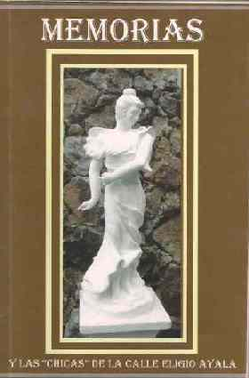
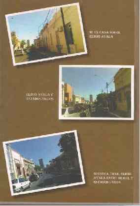
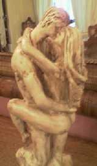

Volver
Rosita Acosta Dacosta de Díaz de Vivar ( de Asunción del Paraguay) nos presenta su obra: Memorias
Y las "chicas" de la calle Eligio Ayala
 |
 |
Que comienza así: "Como de Poetas y locos, todos tenemos un poco, decidí escribir un libro de mis memorias más felices" donde nos efectúa un relato, del tiempo que transcurrió
desde sus tempranos años, hasta la actualidad...
Allí alude a la historia general de su país en aquellos tiempos y a las particularidades del grupo social donde se inserta con su familia(el vecindario);
una descripción geográfica del mismo,incluyendo la dinámica comercial.
Personajes destacados de la época de niñez y juventud; obras en el sector barrial y la urbe de Asunción; una descripción de las casas que habitó la familia.
Las costumbres y creencias del grupo social y familiar.
Su época adolescente, con las relaciones de las "chicas" de la calle Eligio Ayala.
Enumeración y referencia a los personajes de su pueblo...
Y, nos muestra la gran admiración que sentía por su señora madre quien tenía una personalidad exquisita y de gran
inteligencia así como cualidades especiales para el diseño arquitectónico: Ella fue una arquitecta de alma.
Y entonces en su despedida nos cuenta qué motivo la llevó a escribir esta hermosa obra auto-biográfica..."antes de que los años, de envidiosos que son, de la felicidad y de la alegría sana
como la nuestra, los lleve (a las memorias) a decolorarlos aún más de lo que están, me atreví a escribir lo que aún recuerdo..."
Podrán comunicarse con la autora, a fin de acceder a esta creación literaria al siguiente mail: rositacostadacosta@yahoo.com.ar
Anterior (publicado en el año 2005)
Los reclamos del amor...
y también soy escultora...
 |
"También, soy escultora.
Y comenzó así. Había muerto mi Madre querida y
a pesar de tener marido e hijos, no alcanzaba paz ni sosiego y la pasaba
llorando, a escondidas.
Un día, tanto lloré, que creo
me quedé dormida y tuve una visión.
Apareció ante mí una niña de piel negra, vestida
con una túnica blanca y un lazo celeste. No tenía manto,
estaba con las manos juntas hacia abajo y me miraba dulcemente con una
semi-sonrisa de paz.
Yo no conozco a nadie moreno, pues tanto en mi familia como yo, somos
rubios con ojos claros. Así mal podría yo haber pensado
en alguien con esa apariencia exterior... Tan vivido fue mi sueño,
que le pedí al chofer de nuestra casa que averiguara en el mercado
el precio y disponibilidad de arcilla de esa que se usa para arreglos
florales. Desde que la conseguí, me senté a hacer su figura
antes de que la olvidara. Nunca, jamás en mi vida había
hecho nada con ése u otro material, pues más bien, me
gusta la costura.
|
Tantas, pero tantas esculturas hice, que conseguí
una persona del interior que viniera a quemarlas, y luego las pinté.
Me ofrecieron exponerlas y lo hice primeramente en San Bernardino, un
lugar veraniego de mi país y luego en un shopping muy amplio
y bonito que se llama Shopping del Sol.
Mis esculturas son clásicas, no modernas, y las hago sin ningún
modelo; valiéndome de la memoria.
¡Habré hecho más de cincuenta! Y las quiero tanto
que les puse precio en dólares, pues me cuesta deshacerme de
ellas.
Esa es parte de mi historia. Esto es porque después de un tiempo,
cuando las heridas de la muerte de mi Madre ya mejoraron, no pude hacer
absolutamente nada más.
Extraño, ¿verdad? Es como si ella me dijera:"Bueno,
ahora dedícate a otra cosa"
|
 |
|
Jamás estudié nada con relación a cómo trabajar
con arcilla y no tuve
quién me enseñe; pues, aunque conversé con gente
entendida en el tema,
estas personas eran muy celosas de sus secretos y no pude obtener ninguna
información.
Fui aprendiendo sola.
Si comenzaba con las esculturas y las dejaba de un día
para otro, se partían,
o doblaban. Aprendí que las debía envolver con una bolsa
de plástico para que conservaran la humedad. Traje un muchacho
que las "quemaba" y conseguí una profesora de pintura
que vino a enseñarme las nociones
básicas para pintarlas.
Son todas macizas; es decir no huecas y pesan muchísimo.
Algunas figuras tienen hasta medio metro de alto y otras son más
pequeñas.
|
|
Muchas de mis obras refieren
a la -madre con el hijo-, grupo social que sin darme cuenta distinguí
entre otros; lo visualicé con ansias, así como lo hice propio”.
Actualmente Rosita cuenta 63 años de edad. Tiene tres hijos, dos
de ellos casados, que le han brindado cinco nietos.
Cursó la escuela secundaria en Buenos Aires (Argentina) en el “Michael
Ham Memorial College de Vicente López”.
Se trata de una persona sencilla, alegre y sociable y de exquisita sensibilidad.
Agosto de 2005.
|
Volver